MySQL 与索引
索引原理、事务与 MVCC、锁、优化——会话与知识库的落库基础（55 题）
【MySQL 基础】
什么是关系型数据库？
顾名思义，关系型数据库（RDB，Relational Database）就是一种建立在关系模型的基础上的数据库。关系模型表明了数据库中所存储的数据之间的联系（一对一、一对多、多对多）。
关系型数据库中，我们的数据都被存放在了各种表中（比如用户表），表中的每一行就存放着一条数据（比如一个用户的信息）。
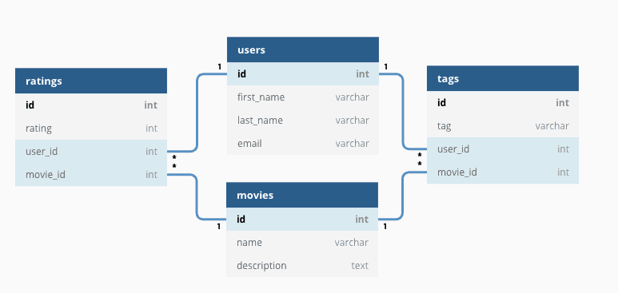
大部分关系型数据库都使用 SQL 来操作数据库中的数据。并且，大部分关系型数据库都支持事务的四大特性(ACID)。
有哪些常见的关系型数据库呢？
MySQL、PostgreSQL、Oracle、SQL Server、SQLite（微信本地的聊天记录的存储就是用的 SQLite） ……。
什么是 SQL？
SQL 是一种结构化查询语言(Structured Query Language)，专门用来与数据库打交道，目的是提供一种从数据库中读写数据的简单有效的方法。
几乎所有的主流关系数据库都支持 SQL ，适用性非常强。并且，一些非关系型数据库也兼容 SQL 或者使用的是类似于 SQL 的查询语言。
SQL 可以帮助我们：
- 新建数据库、数据表、字段；
- 在数据库中增加，删除，修改，查询数据；
- 新建视图、函数、存储过程；
- 对数据库中的数据进行简单的数据分析；
- 搭配 Hive，Spark SQL 做大数据；
- 搭配 SQLFlow 做机器学习；
- ……
什么是 MySQL？
MySQL 是一种关系型数据库，主要用于持久化存储我们的系统中的一些数据比如用户信息。
由于 MySQL 是开源免费并且比较成熟的数据库，因此，MySQL 被大量使用在各种系统中。任何人都可以在 GPL(General Public License) 的许可下下载并根据个性化的需要对其进行修改。MySQL 的默认端口号是3306。
⭐️MySQL 有什么优点？
这个问题本质上是在问 MySQL 如此流行的原因。
MySQL 成功可以归功于在生态、功能和运维这三个层面上的综合优势。
第一，从生态和成本角度看，它的护城河非常深。
- 开源免费： 这是它得以广泛普及的基石。任何公司和个人都可以免费使用，极大地降低了技术门槛和初期成本。
- 社区庞大，生态完善： 经过几十年的发展，MySQL 拥有极其活跃的社区和丰富的生态系统。这意味着无论你遇到什么问题，几乎都能在网上找到解决方案；同时，市面上所有的主流编程语言、框架、ORM 工具、监控系统都对 MySQL 有完美的支持。它的文档也非常丰富，学习资源唾手可得。
第二，从核心技术功能上看，它非常强大且均衡。
- 强大的事务支持： 这是它作为关系型数据库的立身之本。值得一提的是，InnoDB 默认的可重复读（REPEATABLE-READ）隔离级别，通过 MVCC 和 Next-Key Lock 机制，很大程度上避免了幻读问题，这在很多其他数据库中都需要更高的隔离级别才能做到，兼顾了性能和一致性。详细介绍可以阅读笔者写的这篇文章：MySQL 事务隔离级别详解。
- 优秀的性能和可扩展性： MySQL 本身经过了海量互联网业务的严酷考验，单机性能非常出色。更重要的是，它围绕着水平扩展，形成了一套非常成熟的架构方案，比如主从复制、读写分离、以及通过中间件实现的分库分表。这让它能够支撑从初创公司到大型互联网平台的各种规模的业务。
第三，从运维和使用角度看，它非常‘亲民’。
- 开箱即用，上手简单： 相比于 Oracle 等大型商业数据库，MySQL 的安装、配置和日常使用都非常简单直观，学习曲线平缓，对于开发者和初级 DBA 非常友好。
- 维护成本低： 由于其简单性和庞大的社区，找到相关的运维人才和解决方案都相对容易，整体的维护成本也更低。
值得一提的是最近几年，PostgreSQL 的势头很猛，甚至压过了 MySQL。网上出现了很多抨击诋毁 MySQL 的文章，笔者认为任何无脑抨击其中一方或者吹捧另外一方的行为都是不可取的。
笔者也写过一篇文章分享对这两个关系型数据库代表的看法，感兴趣的可以看看：MySQL 被干成老二了？。
【MySQL 字段类型】
⭐️整数类型的 UNSIGNED 属性有什么用？
MySQL 中的整数类型可以使用可选的 UNSIGNED 属性来表示不允许负值的无符号整数。使用 UNSIGNED 属性可以将正整数的上限提高一倍，因为它不需要存储负数值。
例如， TINYINT UNSIGNED 类型的取值范围是 0 ~ 255，而普通的 TINYINT 类型的值范围是 -128 ~ 127。INT UNSIGNED 类型的取值范围是 0 ~ 4,294,967,295，而普通的 INT 类型的值范围是 -2,147,483,648 ~ 2,147,483,647。
对于从 0 开始递增的 ID 列，使用 UNSIGNED 属性可以非常适合，因为不允许负值并且可以拥有更大的上限范围，提供了更多的 ID 值可用。
CHAR 和 VARCHAR 的区别是什么？
CHAR 和 VARCHAR 是最常用到的字符串类型，两者的主要区别在于：CHAR 是定长字符串，VARCHAR 是变长字符串。
CHAR 在存储时会在右边填充空格以达到指定的长度，检索时会去掉空格；VARCHAR 在存储时需要使用 1 或 2 个额外字节记录字符串的长度，检索时不需要处理。
CHAR 更适合存储长度较短或者长度都差不多的字符串，例如 Bcrypt 算法、MD5 算法加密后的密码、身份证号码。VARCHAR 类型适合存储长度不确定或者差异较大的字符串，例如用户昵称、文章标题等。
CHAR(M) 和 VARCHAR(M) 的 M 都代表能够保存的字符数的最大值，无论是字母、数字还是中文，每个都只占用一个字符。
VARCHAR(100)和 VARCHAR(10)的区别是什么？
VARCHAR(100)和 VARCHAR(10)都是变长类型，表示能存储最多 100 个字符和 10 个字符。因此，VARCHAR (100) 可以满足更大范围的字符存储需求，有更好的业务拓展性。而 VARCHAR(10)存储超过 10 个字符时，就需要修改表结构才可以。
虽说 VARCHAR(100)和 VARCHAR(10)能存储的字符范围不同，但二者存储相同的字符串，所占用磁盘的存储空间其实是一样的，这也是很多人容易误解的一点。
不过，VARCHAR(100) 会消耗更多的内存。这是因为 VARCHAR 类型在内存中操作时，通常会分配固定大小的内存块来保存值，即使用字符类型中定义的长度。例如在进行排序的时候，VARCHAR(100)是按照 100 这个长度来进行的，也就会消耗更多内存。
DECIMAL 和 FLOAT/DOUBLE 的区别是什么？
DECIMAL 和 FLOAT 的区别是：DECIMAL 是定点数，FLOAT/DOUBLE 是浮点数。DECIMAL 可以存储精确的小数值，FLOAT/DOUBLE 只能存储近似的小数值。
DECIMAL 用于存储具有精度要求的小数，例如与货币相关的数据，可以避免浮点数带来的精度损失。
在 Java 中，MySQL 的 DECIMAL 类型对应的是 Java 类 java.math.BigDecimal。
为什么不推荐使用 TEXT 和 BLOB？
TEXT 类型类似于 CHAR（0-255 字节）和 VARCHAR（0-65,535 字节），但可以存储更长的字符串，即长文本数据，例如博客内容。
| 类型 | 可存储大小 | 用途 |
|---|---|---|
| TINYTEXT | 0-255 字节 | 一般文本字符串 |
| TEXT | 0-65,535 字节 | 长文本字符串 |
| MEDIUMTEXT | 0-16,772,150 字节 | 较大文本数据 |
| LONGTEXT | 0-4,294,967,295 字节 | 极大文本数据 |
BLOB 类型主要用于存储二进制大对象，例如图片、音视频等文件。
| 类型 | 可存储大小 | 用途 |
|---|---|---|
| TINYBLOB | 0-255 字节 | 短文本二进制字符串 |
| BLOB | 0-65KB | 二进制字符串 |
| MEDIUMBLOB | 0-16MB | 二进制形式的长文本数据 |
| LONGBLOB | 0-4GB | 二进制形式的极大文本数据 |
在日常开发中，很少使用 TEXT 类型，但偶尔会用到，而 BLOB 类型则基本不常用。如果预期长度范围可以通过 VARCHAR 来满足，建议避免使用 TEXT。
数据库规范通常不推荐使用 BLOB 和 TEXT 类型，这两种类型具有一些缺点和限制，例如：
- 不能有默认值。
- 在使用临时表时无法使用内存临时表，只能在磁盘上创建临时表（《高性能 MySQL》书中有提到）。
- 检索效率较低。
- 不能直接创建索引，需要指定前缀长度。
- 可能会消耗大量的网络和 IO 带宽。
- 可能导致表上的 DML 操作变慢。
- ……
⭐️DATETIME 和 TIMESTAMP 的区别是什么？如何选择？
DATETIME 类型没有时区信息，TIMESTAMP 和时区有关。
TIMESTAMP 只需要使用 4 个字节的存储空间，但是 DATETIME 需要耗费 8 个字节的存储空间。但是，这样同样造成了一个问题，Timestamp 表示的时间范围更小。
- DATETIME：'1000-01-01 00:00:00.000000' 到 '9999-12-31 23:59:59.999999'
- Timestamp：'1970-01-01 00:00:01.000000' UTC 到 '2038-01-19 03:14:07.999999' UTC
TIMESTAMP 的核心优势在于其内建的时区处理能力。数据库负责 UTC 存储和基于会话时区的自动转换，简化了需要处理多时区应用的开发。如果应用需要处理多时区，或者希望数据库能自动管理时区转换，TIMESTAMP 是自然的选择（注意其时间范围限制，也就是 2038 年问题）。
如果应用场景不涉及时区转换，或者希望应用程序完全控制时区逻辑，并且需要表示 2038 年之后的时间，DATETIME 是更稳妥的选择。
关于两者的详细对比以及日期存储类型选择建议，请参考我写的这篇文章： MySQL 时间类型数据存储建议。
NULL 和 '' 的区别是什么？
NULL 和 '' (空字符串) 是两个完全不同的值，它们分别表示不同的含义，并在数据库中有着不同的行为。NULL 代表缺失或未知的数据，而 '' 表示一个已知存在的空字符串。它们的主要区别如下：
- 含义:
-
NULL代表一个不确定的值，它不等于任何值，包括它自身。因此，SELECT NULL = NULL的结果是NULL，而不是true或false。NULL意味着缺失或未知的信息。虽然NULL不等于任何值，但在某些操作中，数据库系统会将NULL值视为相同的类别进行处理，例如：DISTINCT,GROUP BY,ORDER BY。需要注意的是，这些操作将NULL值视为相同的类别进行处理，并不意味着NULL值之间是相等的。 它们只是在特定操作中被特殊处理，以保证结果的正确性和一致性。 这种处理方式是为了方便数据操作，而不是改变了NULL的语义。 -''表示一个空字符串，它是一个已知的值。 - 存储空间:
-
NULL的存储空间占用取决于数据库的实现，通常需要一些空间来标记该值为空。 -''的存储空间占用通常较小，因为它只存储一个空字符串的标志，不需要存储实际的字符。 - 比较运算:
- 任何值与
NULL进行比较（例如=,!=,>,<等）的结果都是NULL，表示结果不确定。要判断一个值是否为NULL，必须使用IS NULL或IS NOT NULL。 -''可以像其他字符串一样进行比较运算。例如，'' = ''的结果是true。 - 聚合函数:
- 大多数聚合函数（例如
SUM,AVG,MIN,MAX）会忽略NULL值。 -COUNT(*)会统计所有行数，包括包含NULL值的行。COUNT(列名)会统计指定列中非NULL值的行数。 - 空字符串''会被聚合函数计算在内。例如，SUM会将其视为 0，MIN和MAX会将其视为一个空字符串。
看了上面的介绍之后，相信你对另外一个高频面试题：“为什么 MySQL 不建议使用 NULL 作为列默认值？”也有了答案。
⭐️Boolean 类型如何表示？
MySQL 中没有专门的布尔类型，BOOL 和 BOOLEAN 是 TINYINT(1) 的同义词，通常用 0 表示 false、非 0 表示 true。BIT(1) 是位字段类型，也可以存储 0 或 1，但它并不是 BOOL/BOOLEAN 的实际映射。
⭐️手机号存储用 INT 还是 VARCHAR？
存储手机号，强烈推荐使用 VARCHAR 类型，而不是 INT 或 BIGINT。主要原因如下：
- 格式兼容性与完整性： - 手机号可能包含前导零（如某些地区的固话区号）、国家代码前缀（'+'），甚至可能带有分隔符（'-' 或空格）。INT 或 BIGINT 这种数字类型会自动丢失这些重要的格式信息（比如前导零会被去掉，'+' 和 '-' 无法存储）。 - VARCHAR 可以原样存储各种格式的号码，无论是国内的 11 位手机号，还是带有国家代码的国际号码，都能完美兼容。
- 非算术性： 手机号虽然看起来是数字，但我们从不对它进行数学运算（比如求和、平均值）。它本质上是一个标识符，更像是一个字符串。用 VARCHAR 更符合其数据性质。
- 查询灵活性：
- 业务中常常需要根据号段（前缀）进行查询，例如查找所有 "138" 开头的用户。使用 VARCHAR 类型配合
LIKE '138%'这样的 SQL 查询既直观又高效。 - 如果使用数字类型，进行类似的前缀匹配通常需要复杂的函数转换（如 CAST 或 SUBSTRING），或者使用范围查询（如WHERE phone >= 13800000000 AND phone < 13900000000），这不仅写法繁琐，而且可能无法有效利用索引，导致性能下降。 - 加密存储的要求（非常关键）： - 出于数据安全和隐私合规的要求，手机号这类敏感个人信息通常必须加密存储在数据库中。 - 加密后的数据（密文）是一长串字符串（通常由字母、数字、符号组成，或经过 Base64/Hex 编码），INT 或 BIGINT 类型根本无法存储这种密文。只有 VARCHAR、TEXT 或 BLOB 等类型可以。
关于 VARCHAR 长度的选择：
- 如果不加密存储（强烈不推荐！）： 考虑到国际号码和可能的格式符，VARCHAR(20) 到 VARCHAR(32) 通常是一个比较安全的范围，足以覆盖全球绝大多数手机号格式。VARCHAR(15) 可能对某些带国家码和格式符的号码来说不够用。
- 如果进行加密存储（推荐的标准做法）： 长度必须根据所选加密算法产生的密文最大长度，以及可能的编码方式（如 Base64 会使长度增加约 1/3）来精确计算和设定。通常会需要更长的 VARCHAR 长度，例如 VARCHAR(128), VARCHAR(256) 甚至更长。
最后，来一张表格总结一下：
| 对比维度 | VARCHAR 类型（推荐） | INT/BIGINT 类型（不推荐） | 说明/备注 |
|---|---|---|---|
| 格式兼容性 | ✔ 能存前导零、"+"、"-"、空格等 | ✘ 自动丢失前导零，不能存符号 | VARCHAR 能原样存储各种手机号格式，INT/BIGINT 只支持单纯数字，且前导零会消失 |
| 完整性 | ✔ 不丢失任何格式信息 | ✘ 丢失格式信息 | 例如 "013800012345" 存进 INT 会变成 13800012345，"+" 也无法存储 |
| 非算术性 | ✔ 适合存储“标识符” | ✘ 只适合做数值运算 | 手机号本质是字符串标识符，不做数学运算，VARCHAR 更贴合实际用途 |
| 查询灵活性 | ✔ 支持 LIKE '138%' 等 |
✘ 查询前缀不方便或性能差 | 使用 VARCHAR 可高效按号段/前缀查询，数字类型需转为字符串或其他复杂处理 |
| 加密存储支持 | ✔ 可存储加密密文（字母、符号等） | ✘ 无法存储密文 | 加密手机号后密文是字符串/二进制，只有 VARCHAR、TEXT、BLOB 等能兼容 |
| 长度设置建议 | 15~20（未加密），加密视情况而定 | 无意义 | 不加密时 VARCHAR(15~20) 通用，加密后长度取决于算法和编码方式 |
【MySQL 基础架构】
MySQL 基础架构
建议配合 SQL 语句在 MySQL 中的执行过程 这篇文章来理解 MySQL 基础架构。另外，“一个 SQL 语句在 MySQL 中的执行流程”也是面试中比较常问的一个问题。
下图是 MySQL 的一个简要架构图，从下图你可以很清晰的看到客户端的一条 SQL 语句在 MySQL 内部是如何执行的。
从上图可以看出， MySQL 主要由下面几部分构成：
- 连接器： 身份认证和权限相关(登录 MySQL 的时候)。
- 查询缓存： 执行查询语句的时候，会先查询缓存（MySQL 8.0 版本后移除，因为这个功能不太实用）。
- 分析器： 没有命中缓存的话，SQL 语句就会经过分析器，分析器说白了就是要先看你的 SQL 语句要干嘛，再检查你的 SQL 语句语法是否正确。
- 优化器： 按照 MySQL 认为最优的方案去执行。
- 执行器： 执行语句，然后从存储引擎返回数据。 执行语句之前会先判断是否有权限，如果没有权限的话，就会报错。
- 插件式存储引擎：主要负责数据的存储和读取，采用的是插件式架构，支持 InnoDB、MyISAM、Memory 等多种存储引擎。InnoDB 是 MySQL 的默认存储引擎，绝大部分场景使用 InnoDB 就是最好的选择。
【MySQL 存储引擎】
MySQL 支持哪些存储引擎？默认使用哪个？
MySQL 支持多种存储引擎，你可以通过 SHOW ENGINES 命令来查看 MySQL 支持的所有存储引擎。
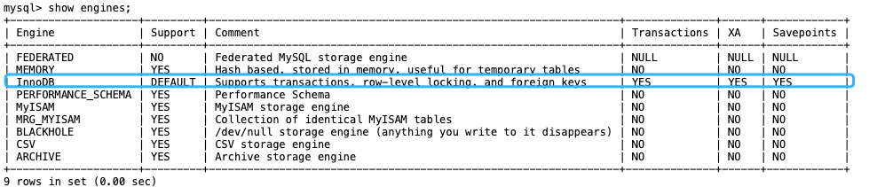
从上图我们可以查看出， MySQL 当前默认的存储引擎是 InnoDB。并且，所有的存储引擎中只有 InnoDB 是事务性存储引擎，也就是说只有 InnoDB 支持事务。
我这里使用的 MySQL 版本是 8.x，不同的 MySQL 版本之间可能会有差别。
MySQL 5.5.5 之前，MyISAM 是 MySQL 的默认存储引擎。5.5.5 版本之后，InnoDB 是 MySQL 的默认存储引擎。
你可以通过 SELECT VERSION() 命令查看你的 MySQL 版本。
mysql> SELECT VERSION();
+-----------+
| VERSION() |
+-----------+
| 8.0.27 |
+-----------+
1 row in set (0.00 sec)
你也可以通过 SHOW VARIABLES LIKE '%storage_engine%' 命令直接查看 MySQL 当前默认的存储引擎。
mysql> SHOW VARIABLES LIKE '%storage_engine%';
+---------------------------------+-----------+
| Variable_name | Value |
+---------------------------------+-----------+
| default_storage_engine | InnoDB |
| default_tmp_storage_engine | InnoDB |
| disabled_storage_engines | |
| internal_tmp_mem_storage_engine | TempTable |
+---------------------------------+-----------+
4 rows in set (0.00 sec)
如果你想要深入了解每个存储引擎以及它们之间的区别，推荐你去阅读以下 MySQL 官方文档对应的介绍(面试不会问这么细，了解即可)：
- InnoDB 存储引擎详细介绍： 。
- 其他存储引擎详细介绍： 。
MySQL 存储引擎架构了解吗？
MySQL 存储引擎采用的是 插件式架构 ，支持多种存储引擎，我们甚至可以为不同的数据库表设置不同的存储引擎以适应不同场景的需要。存储引擎是基于表的，而不是数据库。
下图展示了具有可插拔存储引擎的 MySQL 架构：
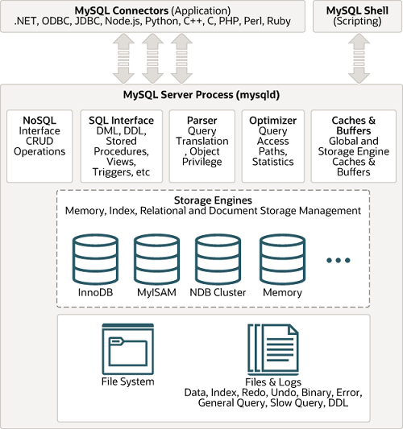
你还可以根据 MySQL 定义的存储引擎实现标准接口来编写一个属于自己的存储引擎。这些非官方提供的存储引擎可以称为第三方存储引擎，区别于官方存储引擎。像目前最常用的 InnoDB 其实刚开始就是一个第三方存储引擎，后面由于过于优秀，其被 Oracle 直接收购了。
MySQL 官方文档也有介绍到如何编写一个自定义存储引擎，地址： 。
⭐️MyISAM 和 InnoDB 有什么区别？
MySQL 5.5 之前，MyISAM 引擎是 MySQL 的默认存储引擎，可谓是风光一时。
虽然，MyISAM 的性能还行，各种特性也还不错（比如全文索引、压缩、空间函数等）。但是，MyISAM 不支持事务和行级锁，而且最大的缺陷就是崩溃后无法安全恢复。
MySQL 5.5 版本之后，InnoDB 是 MySQL 的默认存储引擎。
言归正传！咱们下面还是来简单对比一下两者：
1、是否支持行级锁
MyISAM 只有表级锁(table-level locking)，而 InnoDB 支持行级锁(row-level locking)和表级锁,默认为行级锁。
也就说，MyISAM 一锁就是锁住了整张表，这在并发写的情况下是多么滴憨憨啊！这也是为什么 InnoDB 在并发写的时候，性能更牛皮了！
2、是否支持事务
MyISAM 不提供事务支持。
InnoDB 提供事务支持，实现了 SQL 标准定义了四个隔离级别，具有提交(commit)和回滚(rollback)事务的能力。并且，InnoDB 默认使用的 REPEATABLE-READ（可重读）隔离级别是可以解决幻读问题发生的（基于 MVCC 和 Next-Key Lock）。
关于 MySQL 事务的详细介绍，可以看看我写的这篇文章：MySQL 事务隔离级别详解。
3、是否支持外键
MyISAM 不支持，而 InnoDB 支持。
外键对于维护数据一致性非常有帮助，但是对性能有一定的损耗。因此，通常情况下，我们是不建议在实际生产项目中使用外键的，在业务代码中进行约束即可！
阿里的《Java 开发手册》也是明确规定禁止使用外键的。
不过，在代码中进行约束的话，对程序员的能力要求更高，具体是否要采用外键还是要根据你的项目实际情况而定。
总结：一般我们也是不建议在数据库层面使用外键的，应用层面可以解决。不过，这样会对数据的一致性造成威胁。具体要不要使用外键还是要根据你的项目来决定。
4、是否支持数据库异常崩溃后的安全恢复
MyISAM 不支持，而 InnoDB 支持。
使用 InnoDB 的数据库在异常崩溃后，数据库重新启动的时候会保证数据库恢复到崩溃前的状态。这个恢复的过程依赖于 redo log 。
5、是否支持 MVCC
MyISAM 不支持，而 InnoDB 支持。
讲真，这个对比有点废话，毕竟 MyISAM 连行级锁都不支持。MVCC 可以看作是行级锁的一个升级，可以有效减少加锁操作，提高性能。
6、索引实现不一样。
虽然 MyISAM 引擎和 InnoDB 引擎都是使用 B+Tree 作为索引结构，但是两者的实现方式不太一样。
InnoDB 引擎中，其数据文件本身就是索引文件。相比 MyISAM，索引文件和数据文件是分离的，其表数据文件本身就是按 B+Tree 组织的一个索引结构，树的叶节点 data 域保存了完整的数据记录。
详细区别，推荐你看看我写的这篇文章：MySQL 索引详解。
7、性能有差别。
InnoDB 的性能比 MyISAM 更强大，不管是在读写混合模式下还是只读模式下，随着 CPU 核数的增加，InnoDB 的读写能力呈线性增长。MyISAM 因为读写不能并发，它的处理能力跟核数没关系。
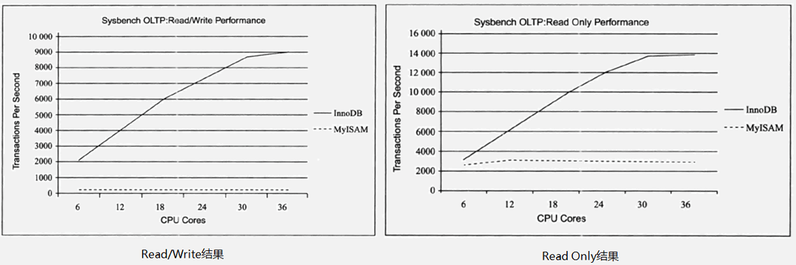
8、数据缓存策略和机制实现不同。
InnoDB 使用缓冲池（Buffer Pool）缓存数据页和索引页，MyISAM 使用键缓存（Key Cache）仅缓存索引页而不缓存数据页。
总结：
- InnoDB 支持行级别的锁粒度，MyISAM 不支持，只支持表级别的锁粒度。
- MyISAM 不提供事务支持。InnoDB 提供事务支持，实现了 SQL 标准定义了四个隔离级别。
- MyISAM 不支持外键，而 InnoDB 支持。
- MyISAM 不支持 MVCC，而 InnoDB 支持。
- 虽然 MyISAM 引擎和 InnoDB 引擎都是使用 B+Tree 作为索引结构，但是两者的实现方式不太一样。
- MyISAM 不支持数据库异常崩溃后的安全恢复，而 InnoDB 支持。
- InnoDB 的性能比 MyISAM 更强大。
最后，再分享一张图片给你，这张图片详细对比了常见的几种 MySQL 存储引擎。
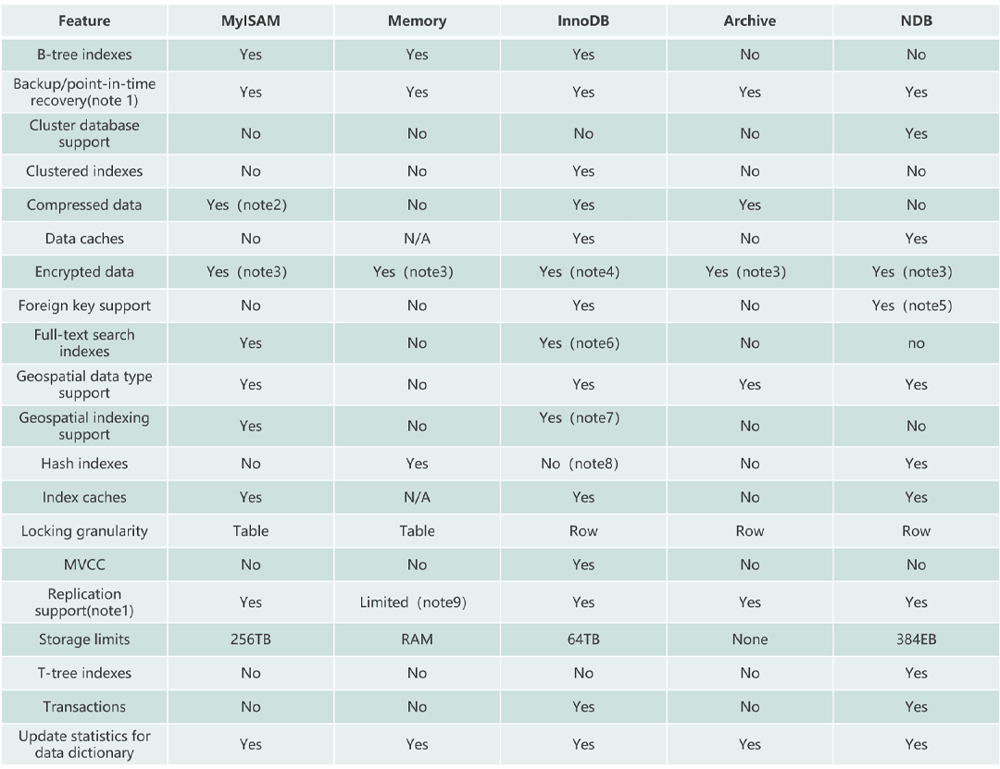
MyISAM 和 InnoDB 如何选择？
大多数时候我们使用的都是 InnoDB 存储引擎，在某些读密集的情况下，使用 MyISAM 也是合适的。不过，前提是你的项目不介意 MyISAM 不支持事务、崩溃恢复等缺点（可是~我们一般都会介意啊）。
《MySQL 高性能》上面有一句话这样写到:
不要轻易相信“MyISAM 比 InnoDB 快”之类的经验之谈，这个结论往往不是绝对的。在很多我们已知场景中，InnoDB 的速度都可以让 MyISAM 望尘莫及，尤其是用到了聚簇索引，或者需要访问的数据都可以放入内存的应用。
因此，对于咱们日常开发的业务系统来说，你几乎找不到什么理由使用 MyISAM 了，老老实实用默认的 InnoDB 就可以了！
【⭐️MySQL 索引】
索引是什么？
索引是一种用于快速查询和检索数据的数据结构，其本质可以看成是一种排序好的数据结构。
索引的作用就相当于书的目录。打个比方：我们在查字典的时候，如果没有目录，那我们就只能一页一页地去找我们需要查的那个字，速度很慢；如果有目录了，我们只需要先去目录里查找字的位置，然后直接翻到那一页就行了。
索引底层数据结构存在很多种类型，常见的索引结构有：B 树、 B+ 树 和 Hash、红黑树。在 MySQL 中，无论是 Innodb 还是 MyISAM，都使用了 B+ 树作为索引结构。
索引的优点：
- 查询速度起飞 (主要目的)：通过索引，数据库可以大幅减少需要扫描的数据量，直接定位到符合条件的记录，从而显著加快数据检索速度，减少磁盘 I/O 次数。
- 保证数据唯一性：通过创建唯一索引 (Unique Index),可以确保表中的某一列（或几列组合）的值是独一无二的，比如用户 ID、邮箱等。主键本身就是一种唯一索引。
- 加速排序和分组：如果查询中的 ORDER BY 或 GROUP BY 子句涉及的列建有索引，数据库往往可以直接利用索引已经排好序的特性，避免额外的排序操作，从而提升性能。
索引的缺点：
- 创建和维护耗时：创建索引本身需要时间，特别是对大表操作时。更重要的是，当对表中的数据进行增、删、改 (DML 操作) 时，不仅要操作数据本身，相关的索引也必须动态更新和维护，这会降低这些 DML 操作的执行效率。
- 占用存储空间：索引本质上也是一种数据结构，需要以物理文件（或内存结构）的形式存储，因此会额外占用一定的磁盘空间。索引越多、越大，占用的空间也就越多。
- 可能被误用或失效：如果索引设计不当，或者查询语句写得不好，数据库优化器可能不会选择使用索引（或者选错索引），反而导致性能下降。
那么，用了索引就一定能提高查询性能吗？
不一定。 大多数情况下，合理使用索引确实比全表扫描快得多。但也有例外：
- 数据量太小：如果表里的数据非常少（比如就几百条），全表扫描可能比通过索引查找更快，因为走索引本身也有开销。
- 查询结果集占比过大：如果要查询的数据占了整张表的大部分（比如超过 20%-30%），优化器可能会认为全表扫描更划算，因为通过索引多次回表（随机 I/O）的成本可能高于一次顺序的全表扫描。
- 索引维护不当或统计信息过时：导致优化器做出错误判断。
索引为什么快？
索引之所以快，核心原因是它大大减少了磁盘 I/O 的次数。
它的本质是一种排好序的数据结构，就像书的目录，让我们不用一页一页地翻（全表扫描）。
在 MySQL 中，这个数据结构是B+树。B+树结构主要从两方面做了优化：
- B+树的特点是“矮胖”，一个千万数据的表，索引树的高度可能只有 3-4 层。这意味着，最多只需要3-4 次磁盘 I/O，就能精确定位到我想要的数据，而全表扫描可能需要成千上万次，所以速度极快。
- B+树的叶子节点是用链表连起来的。找到开头后，就能顺着链表顺序读下去，这对磁盘非常友好，还能触发预读。
MySQL 索引底层数据结构是什么？
在 MySQL 中，MyISAM 引擎和 InnoDB 引擎都是使用 B+Tree 作为索引结构，详细介绍可以参考笔者写的这篇文章：MySQL 索引详解。
为什么 InnoDB 没有使用哈希作为索引的数据结构？
我发现很多求职者甚至是面试官对这个问题都有误解，他们想当然的认为 MySQL 底层并没有使用哈希或者 B 树作为索引的数据结构。
实际上，不论是提问还是回答这个问题都要区分好存储引擎。像 MEMORY 引擎就同时支持哈希和 B 树。
哈希索引的底层是哈希表。它的优点是，在进行精确的等值查询时，理论上时间复杂度是 O(1) ，速度极快。比如 WHERE id = 123。
但是，它有几个对于通用数据库来说是致命的缺点：
- 不支持范围查询: 这是最主要的原因。哈希函数的一个特点是它会把相邻的输入值（比如
id=100和id=101）映射到哈希表中完全不相邻的位置。这种顺序的破坏，使得我们无法处理像WHERE age > 30或BETWEEN 100 AND 200这样的范围查询。要完成这种查询，哈希索引只能退化为全表扫描。 - 不支持排序: 同理，因为哈希值是无序的，所以我们无法利用哈希索引来优化
ORDER BY子句。 - 不支持部分索引键查询: 对于联合索引，比如
(col1, col2)，哈希索引必须使用所有索引列进行查询，它无法单独利用col1来加速查询。 - 哈希冲突问题: 当不同的键产生相同的哈希值时，需要额外的链表或开放寻址来解决，这会降低性能。
鉴于数据库查询中范围查询和排序是极其常见的操作，一个不支持这些功能的索引结构，显然不能作为默认的、通用的索引类型。
为什么 InnoDB 没有使用 B 树作为索引的数据结构？
B 树和 B+树都是优秀的多路平衡搜索树，非常适合磁盘存储，因为它们都很“矮胖”，能最大化地利用每一次磁盘 I/O。
但 B+树是 B 树的一个增强版，它针对数据库场景做了几个关键优化：
- I/O 效率更高: 在 B+树中，只有叶子节点才存储数据（或数据指针），而非叶子节点只存储索引键。因为非叶子节点不存数据，所以它们可以容纳更多的索引键。这意味着 B+树的“扇出”更大，在同样的数据量下，B+树通常会比 B 树更矮，也就意味着查找数据所需的磁盘 I/O 次数更少。
- 查询性能更稳定: 在 B+树中，任何一次查询都必须从根节点走到叶子节点才能找到数据，所以查询路径的长度是固定的。而在 B 树中，如果运气好，可能在非叶子节点就找到了数据，但运气不好也得走到叶子，这导致查询性能不稳定。
- 对范围查询极其友好: 这是 B+树最核心的优势。它的所有叶子节点之间通过一个双向链表连接。当我们执行一个范围查询（比如
WHERE id > 100）时，只需要通过树形结构找到id=100的叶子节点，然后就可以沿着链表向后顺序扫描，而无需再回溯到上层节点。这使得范围查询的效率大大提高。
什么是覆盖索引？
如果一个索引包含（或者说覆盖）所有需要查询的字段的值，我们就称之为 覆盖索引（Covering Index）。
在 InnoDB 存储引擎中，非主键索引的叶子节点包含的是主键的值。这意味着，当使用非主键索引进行查询时，数据库会先找到对应的主键值，然后再通过主键索引来定位和检索完整的行数据。这个过程被称为“回表”。
覆盖索引即需要查询的字段正好是索引的字段，那么直接根据该索引，就可以查到数据了，而无需回表查询。
请解释一下 MySQL 的联合索引及其最左前缀原则
使用表中的多个字段创建索引，就是 联合索引，也叫 组合索引 或 复合索引。
以 score 和 name 两个字段建立联合索引：
ALTER TABLE `cus_order` ADD INDEX id_score_name(score, name);
最左前缀匹配原则指的是在使用联合索引时，MySQL 会根据索引中的字段顺序，从左到右依次匹配查询条件中的字段。如果查询条件与索引中的最左侧字段相匹配，那么 MySQL 就会使用索引来过滤数据，这样可以提高查询效率。
最左匹配原则会一直向右匹配，直到遇到范围查询（如 >、<）为止。对于 >=、<=、BETWEEN 以及前缀匹配 LIKE 的范围查询，不会停止匹配（相关阅读：联合索引的最左匹配原则全网都在说的一个错误结论）。
假设有一个联合索引 (column1, column2, column3)，其从左到右的所有前缀为 (column1)、(column1, column2)、(column1, column2, column3)（创建 1 个联合索引相当于创建了 3 个索引），包含这些列的所有查询都会走索引而不会全表扫描。
我们在使用联合索引时，可以将区分度高的字段放在最左边，这也可以过滤更多数据。
我们这里简单演示一下最左前缀匹配的效果。
1、创建一个名为 student 的表，这张表只有 id、name、class 这 3 个字段。
CREATE TABLE `student` (
`id` int NOT NULL,
`name` varchar(100) DEFAULT NULL,
`class` varchar(100) DEFAULT NULL,
PRIMARY KEY (`id`),
KEY `name_class_idx` (`name`,`class`)
) ENGINE=InnoDB DEFAULT CHARSET=utf8mb4;
2、下面我们分别测试三条不同的 SQL 语句。
# 可以命中索引
SELECT * FROM student WHERE name = 'Anne Henry';
EXPLAIN SELECT * FROM student WHERE name = 'Anne Henry' AND class = 'lIrm08RYVk';
# 无法命中索引
SELECT * FROM student WHERE class = 'lIrm08RYVk';
再来看一个常见的面试题：如果有索引 联合索引（a，b，c），查询 a=1 AND c=1 会走索引么？c=1 呢？b=1 AND c=1 呢？ b = 1 AND a = 1 AND c = 1 呢？
先不要往下看答案，给自己 3 分钟时间想一想。
- 查询
a=1 AND c=1：根据最左前缀匹配原则，查询可以使用索引的前缀部分。因此，该查询仅在a=1上使用索引，然后对结果进行c=1的过滤。 - 查询
c=1：由于查询中不包含最左列a，根据最左前缀匹配原则，整个索引都无法被使用。 - 查询
b=1 AND c=1：和第二种一样的情况，整个索引都不会使用。 - 查询
b=1 AND a=1 AND c=1：这个查询是可以用到索引的。查询优化器分析 SQL 语句时，对于联合索引，会对查询条件进行重排序，以便用到索引。会将b=1和a=1的条件进行重排序，变成a=1 AND b=1 AND c=1。
MySQL 8.0.13 版本引入了索引跳跃扫描（Index Skip Scan，简称 ISS），它可以在某些索引查询场景下提高查询效率。在没有 ISS 之前，不满足最左前缀匹配原则的联合索引查询中会执行全表扫描。而 ISS 允许 MySQL 在某些情况下避免全表扫描，即使查询条件不符合最左前缀。不过，这个功能比较鸡肋， 和 Oracle 中的没法比，MySQL 8.0.31 还报告了一个 bug：Bug #109145 Using index for skip scan cause incorrect result（后续版本已经修复）。个人建议知道有这个东西就好，不需要深究，实际项目也不一定能用上。
SELECT * 会导致索引失效吗？
SELECT * 不会直接导致索引失效（如果不走索引大概率是因为 where 查询范围过大导致的），但它可能会带来一些其他的性能问题比如造成网络传输和数据处理的浪费、无法使用索引覆盖。
哪些字段适合创建索引？
- 不为 NULL 的字段：索引字段的数据应该尽量不为 NULL，因为对于数据为 NULL 的字段，数据库较难优化。如果字段频繁被查询，但又避免不了为 NULL，建议使用 0,1,true,false 这样语义较为清晰的短值或短字符作为替代。
- 被频繁查询的字段：我们创建索引的字段应该是查询操作非常频繁的字段。
- 被作为条件查询的字段：被作为 WHERE 条件查询的字段，应该被考虑建立索引。
- 频繁需要排序的字段：索引已经排序，这样查询可以利用索引的排序，加快排序查询时间。
- 被经常频繁用于连接的字段：经常用于连接的字段可能是一些外键列，对于外键列并不一定要建立外键，只是说该列涉及到表与表的关系。对于频繁被连接查询的字段，可以考虑建立索引，提高多表连接查询的效率。
索引失效的原因有哪些？
- 创建了组合索引，但查询条件未遵守最左匹配原则;
- 在索引列上进行计算、函数、类型转换等操作;
- 以 % 开头的 LIKE 查询比如
LIKE '%abc';; - 查询条件中使用 OR，且 OR 的前后条件中有一个列没有索引，涉及的索引都不会被使用到;
- IN 的取值范围较大时会导致索引失效，走全表扫描(NOT IN 和 IN 的失效场景相同);
- 发生隐式转换;
【MySQL 查询缓存】
MySQL 查询缓存
MySQL 查询缓存是查询结果缓存。执行查询语句的时候，会先查询缓存，如果缓存中有对应的查询结果，就会直接返回。
my.cnf 加入以下配置，重启 MySQL 开启查询缓存
query_cache_type=1
query_cache_size=600000
MySQL 执行以下命令也可以开启查询缓存
set global query_cache_type=1;
set global query_cache_size=600000;
查询缓存会在同样的查询条件和数据情况下，直接返回缓存中的结果。但需要注意的是，查询缓存的匹配条件非常严格，任何细微的差异都会导致缓存无法命中。这里的查询条件包括查询语句本身、当前使用的数据库、以及其他可能影响结果的因素，如客户端协议版本号等。
查询缓存不命中的情况：
- 任何两个查询在任何字符上的不同都会导致缓存不命中。
- 如果查询中包含任何用户自定义函数、存储函数、用户变量、临时表、MySQL 库中的系统表，其查询结果也不会被缓存。
- 缓存建立之后，MySQL 的查询缓存系统会跟踪查询中涉及的每张表，如果这些表（数据或结构）发生变化，那么和这张表相关的所有缓存数据都将失效。
缓存虽然能够提升数据库的查询性能，但是缓存同时也带来了额外的开销，每次查询后都要做一次缓存操作，失效后还要销毁。 因此，开启查询缓存要谨慎，尤其对于写密集的应用来说更是如此。如果开启，要注意合理控制缓存空间大小，一般来说其大小设置为几十 MB 比较合适。此外，还可以通过 sql_cache 和 sql_no_cache 来控制某个查询语句是否需要缓存：
SELECT sql_no_cache COUNT(*) FROM usr;
MySQL 5.6 开始，查询缓存已默认禁用。MySQL 8.0 开始，已经不再支持查询缓存了（具体可以参考这篇文章：MySQL 8.0: Retiring Support for the Query Cache）。
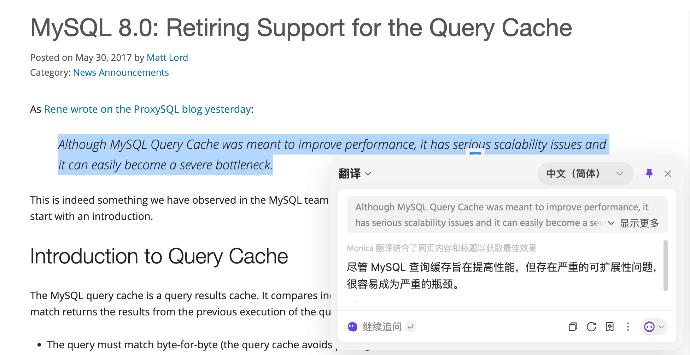
【⭐️MySQL 日志】
⭐️MySQL 日志
上诉问题的答案可以在《Java 面试指北》(付费，点击链接领取优惠卷) 的 「技术面试题篇」 中找到。
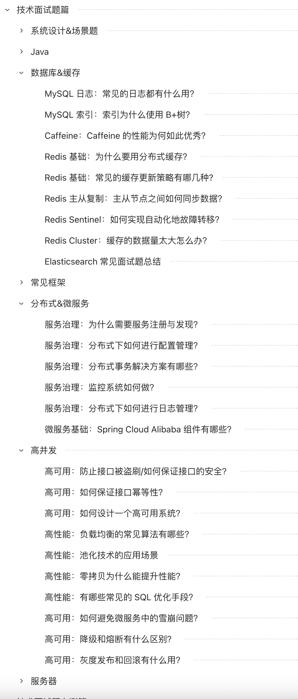
文章地址： （密码获取：）。
【⭐️MySQL 事务】
什么是事务？
我们设想一个场景，这个场景中我们需要插入多条相关联的数据到数据库，不幸的是，这个过程可能会遇到下面这些问题：
- 数据库中途突然因为某些原因挂掉了。
- 客户端突然因为网络原因连接不上数据库了。
- 并发访问数据库时，多个线程同时写入数据库，覆盖了彼此的更改。
- ……
上面的任何一个问题都可能会导致数据的不一致性。为了保证数据的一致性，系统必须能够处理这些问题。事务就是我们抽象出来简化这些问题的首选机制。事务的概念起源于数据库，目前，已经成为一个比较广泛的概念。
何为事务？ 一言蔽之，事务是逻辑上的一组操作，要么都执行，要么都不执行。
事务最经典也经常被拿出来说例子就是转账了。假如小明要给小红转账 1000 元，这个转账会涉及到两个关键操作，这两个操作必须都成功或者都失败。
- 将小明的余额减少 1000 元
- 将小红的余额增加 1000 元。
事务会把这两个操作就可以看成逻辑上的一个整体，这个整体包含的操作要么都成功，要么都要失败。这样就不会出现小明余额减少而小红的余额却并没有增加的情况。
什么是数据库事务？
大多数情况下，我们在谈论事务的时候，如果没有特指分布式事务，往往指的就是数据库事务。
数据库事务在我们日常开发中接触的最多了。如果你的项目属于单体架构的话，你接触到的往往就是数据库事务了。
那数据库事务有什么作用呢？
简单来说，数据库事务可以保证多个对数据库的操作（也就是 SQL 语句）构成一个逻辑上的整体。构成这个逻辑上的整体的这些数据库操作遵循：要么全部执行成功,要么全部不执行 。
# 开启一个事务
START TRANSACTION;
# 多条 SQL 语句
SQL1,SQL2...
# 提交事务
COMMIT;
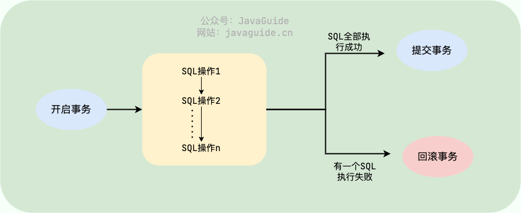
另外，关系型数据库（例如：MySQL、SQL Server、Oracle 等）事务都有 ACID 特性：
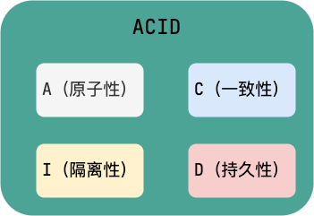
- 原子性（
Atomicity）：事务是最小的执行单位，不允许分割。事务的原子性确保动作要么全部完成，要么完全不起作用； - 一致性（
Consistency）：执行事务前后，数据保持一致，例如转账业务中，无论事务是否成功，转账者和收款人的总额应该是不变的； - 隔离性（
Isolation）：并发访问数据库时，一个用户的事务不被其他事务所干扰，各并发事务之间数据库是独立的； - 持久性（
Durability）：一个事务被提交之后。它对数据库中数据的改变是持久的，即使数据库发生故障也不应该对其有任何影响。
🌈 这里要额外补充一点：只有保证了事务的持久性、原子性、隔离性之后，一致性才能得到保障。也就是说 A、I、D 是手段，C 是目的！ 想必大家也和我一样，被 ACID 这个概念被误导了很久! 我也是看周志明老师的公开课《周志明的软件架构课》才搞清楚的（多看好书！！！）。
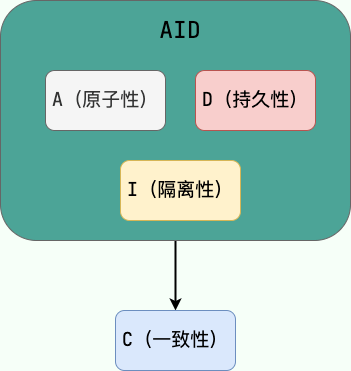
另外，DDIA 也就是 《Designing Data-Intensive Application（数据密集型应用系统设计）》 的作者在他的这本书中如是说：
Atomicity, isolation, and durability are properties of the database, whereas consis‐ tency (in the ACID sense) is a property of the application. The application may rely on the database’s atomicity and isolation properties in order to achieve consistency, but it’s not up to the database alone.
翻译过来的意思是：原子性，隔离性和持久性是数据库的属性，而一致性（在 ACID 意义上）是应用程序的属性。应用可能依赖数据库的原子性和隔离属性来实现一致性，但这并不仅取决于数据库。因此，字母 C 不属于 ACID 。
《Designing Data-Intensive Application（数据密集型应用系统设计）》这本书强推一波，值得读很多遍！豆瓣有接近 90% 的人看了这本书之后给了五星好评。另外，中文翻译版本已经在 GitHub 开源，地址：https://github.com/Vonng/ddia 。
并发事务带来了哪些问题?
在典型的应用程序中，多个事务并发运行，经常会操作相同的数据来完成各自的任务（多个用户对同一数据进行操作）。并发虽然是必须的，但可能会导致以下的问题。
脏读（Dirty read）
一个事务读取数据并且对数据进行了修改，这个修改对其他事务来说是可见的，即使当前事务没有提交。这时另外一个事务读取了这个还未提交的数据，但第一个事务突然回滚，导致数据并没有被提交到数据库，那第二个事务读取到的就是脏数据，这也就是脏读的由来。
例如：事务 1 读取某表中的数据 A=20，事务 1 修改 A=A-1，事务 2 读取到 A = 19,事务 1 回滚导致对 A 的修改并未提交到数据库， A 的值还是 20。
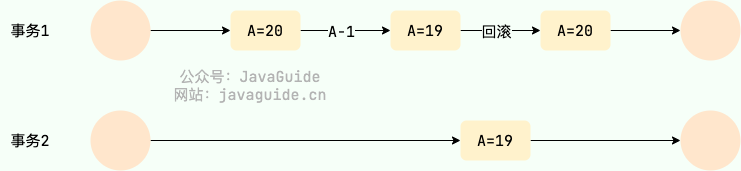
丢失修改（Lost to modify）
在一个事务读取一个数据时，另外一个事务也访问了该数据，那么在第一个事务中修改了这个数据后，第二个事务也修改了这个数据。这样第一个事务内的修改结果就被丢失，因此称为丢失修改。
例如：事务 1 读取某表中的数据 A=20，事务 2 也读取 A=20，事务 1 先修改 A=A-1，事务 2 后来也修改 A=A-1，最终结果 A=19，事务 1 的修改被丢失。
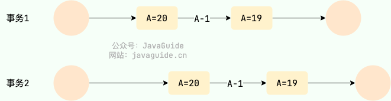
不可重复读（Unrepeatable read）
指在一个事务内多次读同一数据。在这个事务还没有结束时，另一个事务也访问该数据。那么，在第一个事务中的两次读数据之间，由于第二个事务的修改导致第一个事务两次读取的数据可能不太一样。这就发生了在一个事务内两次读到的数据是不一样的情况，因此称为不可重复读。
例如：事务 1 读取某表中的数据 A=20，事务 2 也读取 A=20，事务 1 修改 A=A-1，事务 2 再次读取 A =19，此时读取的结果和第一次读取的结果不同。
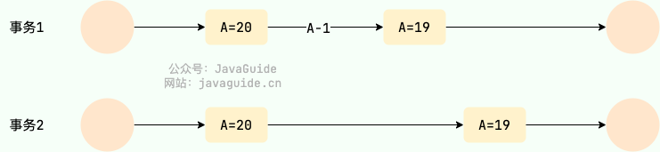
幻读（Phantom read）
幻读与不可重复读类似。它发生在一个事务读取了几行数据，接着另一个并发事务插入了一些数据时。在随后的查询中，第一个事务就会发现多了一些原本不存在的记录，就好像发生了幻觉一样，所以称为幻读。
例如：事务 2 读取某个范围的数据，事务 1 在这个范围插入了新的数据，事务 2 再次读取这个范围的数据发现相比于第一次读取的结果多了新的数据。
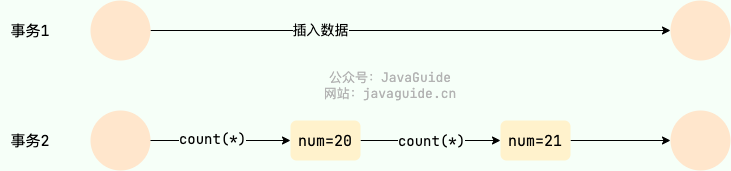
不可重复读和幻读有什么区别？
- 不可重复读：同一事务内，同一条记录被其他事务修改或删除，导致再次读取时记录内容或存在性发生变化。
- 幻读：同一事务内，同一个范围条件查询多次执行时，符合条件的记录集合发生变化，出现新增或消失的记录。
幻读其实可以看作是不可重复读的一种特殊情况，单独把幻读区分出来的原因主要是解决幻读和不可重复读的方案不一样。
举个例子：执行 delete 和 update 操作的时候，可以直接对记录加锁，保证事务安全。而执行 insert 操作的时候，由于记录锁（Record Lock）只能锁住已经存在的记录，为了避免插入新记录，需要依赖间隙锁（Gap Lock）。也就是说执行 insert 操作的时候需要依赖 Next-Key Lock（Record Lock+Gap Lock） 进行加锁来保证不出现幻读。
并发事务的控制方式有哪些？
MySQL 中并发事务的控制方式无非就两种：锁 和 MVCC。锁可以看作是悲观控制的模式，多版本并发控制（MVCC，Multiversion concurrency control）可以看作是乐观控制的模式。
锁 控制方式下会通过锁来显式控制共享资源而不是通过调度手段，MySQL 中主要是通过 读写锁 来实现并发控制。
- 共享锁（S 锁）：又称读锁，事务在读取记录的时候获取共享锁，允许多个事务同时获取（锁兼容）。
- 排他锁（X 锁）：又称写锁/独占锁，事务在修改记录的时候获取排他锁，不允许多个事务同时获取。如果一个记录已经被加了排他锁，那其他事务不能再对这条记录加任何类型的锁（锁不兼容）。
读写锁可以做到读读并行，但是无法做到写读、写写并行。另外，根据根据锁粒度的不同，又被分为 表级锁(table-level locking) 和 行级锁(row-level locking) 。InnoDB 不光支持表级锁，还支持行级锁，默认为行级锁。行级锁的粒度更小，仅对相关的记录上锁即可（对一行或者多行记录加锁），所以对于并发写入操作来说， InnoDB 的性能更高。不论是表级锁还是行级锁，都存在共享锁（Share Lock，S 锁）和排他锁（Exclusive Lock，X 锁）这两类。
MVCC 是多版本并发控制方法，即对一份数据会存储多个版本，通过事务的可见性来保证事务能看到自己应该看到的版本。通常会有一个全局的版本分配器来为每一行数据设置版本号，版本号是唯一的。
MVCC 在 MySQL 中实现所依赖的手段主要是: 隐藏字段、read view、undo log。
- undo log : undo log 用于记录某行数据的多个版本的数据。
- read view 和 隐藏字段 : 用来判断当前版本数据的可见性。
关于 InnoDB 对 MVCC 的具体实现可以看这篇文章：InnoDB 存储引擎对 MVCC 的实现 。
SQL 标准定义了哪些事务隔离级别?
SQL 标准定义了四种事务隔离级别，用来平衡事务的隔离性（Isolation）和并发性能。级别越高，数据一致性越好，但并发性能可能越低。这四个级别是：
- READ-UNCOMMITTED(读取未提交) ：最低的隔离级别，允许读取尚未提交的数据变更，可能会导致脏读、幻读或不可重复读。这种级别在实际应用中很少使用，因为它对数据一致性的保证太弱。
- READ-COMMITTED(读取已提交) ：允许读取并发事务已经提交的数据，可以阻止脏读，但是幻读或不可重复读仍有可能发生。这是大多数数据库（如 Oracle, SQL Server）的默认隔离级别。
- REPEATABLE-READ(可重复读) ：对同一字段的多次读取结果都是一致的，除非数据是被本身事务自己所修改，可以阻止脏读和不可重复读，但幻读仍有可能发生。MySQL InnoDB 存储引擎的默认隔离级别正是 REPEATABLE READ。并且，InnoDB 在此级别下通过 MVCC（多版本并发控制） 和 Next-Key Locks（间隙锁+行锁） 机制，在很大程度上解决了幻读问题。
- SERIALIZABLE(可串行化) ：最高的隔离级别，完全服从 ACID 的隔离级别。所有的事务依次逐个执行，这样事务之间就完全不可能产生干扰，也就是说，该级别可以防止脏读、不可重复读以及幻读。
| 隔离级别 | 脏读 (Dirty Read) | 不可重复读 (Non-Repeatable Read) | 幻读 (Phantom Read) |
|---|---|---|---|
| READ UNCOMMITTED | √ | √ | √ |
| READ COMMITTED | × | √ | √ |
| REPEATABLE READ | × | × | √ (标准) / ≈× (InnoDB) |
| SERIALIZABLE | × | × | × |
MySQL 的默认隔离级别是什么?
MySQL InnoDB 存储引擎的默认隔离级别是 REPEATABLE READ。可以通过以下命令查看：
- MySQL 8.0 之前：
SELECT @@tx_isolation; - MySQL 8.0 及之后：
SELECT @@transaction_isolation;
mysql> SELECT @@tx_isolation;
+-----------------+
| @@tx_isolation |
+-----------------+
| REPEATABLE-READ |
+-----------------+
关于 MySQL 事务隔离级别的详细介绍，可以看看我写的这篇文章：MySQL 事务隔离级别详解。
MySQL 的隔离级别是基于锁实现的吗？
MySQL 的隔离级别基于锁和 MVCC 机制共同实现的。
SERIALIZABLE 隔离级别是通过锁来实现的，READ-COMMITTED 和 REPEATABLE-READ 隔离级别是基于 MVCC 实现的。不过， SERIALIZABLE 之外的其他隔离级别可能也需要用到锁机制，就比如 REPEATABLE-READ 在当前读情况下需要使用加锁读来保证不会出现幻读。
【MySQL 锁】
表级锁和行级锁了解吗？有什么区别？
MyISAM 仅仅支持表级锁(table-level locking)，一锁就锁整张表，这在并发写的情况下性非常差。InnoDB 不光支持表级锁(table-level locking)，还支持行级锁(row-level locking)，默认为行级锁。
行级锁的粒度更小，仅对相关的记录上锁即可（对一行或者多行记录加锁），所以对于并发写入操作来说， InnoDB 的性能更高。
表级锁和行级锁对比：
- 表级锁： MySQL 中锁定粒度最大的一种锁（全局锁除外），是针对非索引字段加的锁，对当前操作的整张表加锁，实现简单，资源消耗也比较少，加锁快，不会出现死锁。不过，触发锁冲突的概率最高，高并发下效率极低。表级锁和存储引擎无关，MyISAM 和 InnoDB 引擎都支持表级锁。
- 行级锁： MySQL 中锁定粒度最小的一种锁，是 针对索引字段加的锁 ，只针对当前操作的行记录进行加锁。 行级锁能大大减少数据库操作的冲突。其加锁粒度最小，并发度高，但加锁的开销也最大，加锁慢，会出现死锁。行级锁和存储引擎有关，是在存储引擎层面实现的。
行级锁的使用有什么注意事项？
InnoDB 的行锁是针对索引字段加的锁，表级锁是针对非索引字段加的锁。当我们执行 UPDATE、DELETE 语句时，如果 WHERE条件中字段没有命中唯一索引或者索引失效的话，就会导致扫描全表对表中的所有行记录进行加锁。这个在我们日常工作开发中经常会遇到，一定要多多注意！！！
不过，很多时候即使用了索引也有可能会走全表扫描，这是因为 MySQL 优化器的原因。
InnoDB 有哪几类行锁？
InnoDB 行锁是通过对索引数据页上的记录加锁实现的，MySQL InnoDB 支持三种行锁定方式：
- 记录锁（Record Lock）：属于单个行记录上的锁。
- 间隙锁（Gap Lock）：锁定一个范围，不包括记录本身。
- 临键锁（Next-Key Lock）：Record Lock+Gap Lock，锁定一个范围，包含记录本身，主要目的是为了解决幻读问题（MySQL 事务部分提到过）。记录锁只能锁住已经存在的记录，为了避免插入新记录，需要依赖间隙锁。
在 InnoDB 默认的隔离级别 REPEATABLE-READ 下，行锁默认使用的是 Next-Key Lock。但是，如果操作的索引是唯一索引或主键，InnoDB 会对 Next-Key Lock 进行优化，将其降级为 Record Lock，即仅锁住索引本身，而不是范围。
共享锁和排他锁呢？
不论是表级锁还是行级锁，都存在共享锁（Share Lock，S 锁）和排他锁（Exclusive Lock，X 锁）这两类：
- 共享锁（S 锁）：又称读锁，事务在读取记录的时候获取共享锁，允许多个事务同时获取（锁兼容）。
- 排他锁（X 锁）：又称写锁/独占锁，事务在修改记录的时候获取排他锁，不允许多个事务同时获取。如果一个记录已经被加了排他锁，那其他事务不能再对这条事务加任何类型的锁（锁不兼容）。
排他锁与任何的锁都不兼容，共享锁仅和共享锁兼容。
| S 锁 | X 锁 | |
|---|---|---|
| S 锁 | 不冲突 | 冲突 |
| X 锁 | 冲突 | 冲突 |
由于 MVCC 的存在，对于一般的 SELECT 语句，InnoDB 不会加任何锁。不过， 你可以通过以下语句显式加共享锁或排他锁。
# 共享锁 可以在 MySQL 5.7 和 MySQL 8.0 中使用
SELECT ... LOCK IN SHARE MODE;
# 共享锁 可以在 MySQL 8.0 中使用
SELECT ... FOR SHARE;
# 排他锁
SELECT ... FOR UPDATE;
意向锁有什么作用？
如果需要用到表锁的话，如何判断表中的记录没有行锁呢，一行一行遍历肯定是不行，性能太差。我们需要用到一个叫做意向锁的东东来快速判断是否可以对某个表使用表锁。
意向锁是表级锁，共有两种：
- 意向共享锁（Intention Shared Lock，IS 锁）：事务有意向对表中的某些记录加共享锁（S 锁），加共享锁前必须先取得该表的 IS 锁。
- 意向排他锁（Intention Exclusive Lock，IX 锁）：事务有意向对表中的某些记录加排他锁（X 锁），加排他锁之前必须先取得该表的 IX 锁。
意向锁是由数据引擎自己维护的，用户无法手动操作意向锁，在为数据行加共享/排他锁之前，InnoDB 会先获取该数据行所在在数据表的对应意向锁。
意向锁之间是互相兼容的。
| IS 锁 | IX 锁 | |
|---|---|---|
| IS 锁 | 兼容 | 兼容 |
| IX 锁 | 兼容 | 兼容 |
意向锁和共享锁和排它锁互斥（这里指的是表级别的共享锁和排他锁，意向锁不会与行级的共享锁和排他锁互斥）。
| IS 锁 | IX 锁 | |
|---|---|---|
| S 锁 | 兼容 | 互斥 |
| X 锁 | 互斥 | 互斥 |
《MySQL 技术内幕 InnoDB 存储引擎》这本书对应的描述应该是笔误了。
当前读和快照读有什么区别？
快照读（一致性非锁定读）就是单纯的 SELECT 语句，但不包括下面这两类 SELECT 语句：
# 排他锁，可以在 MySQL 5.7 和 MySQL 8.0 中使用
SELECT ... FOR UPDATE
# 共享锁，可以在 MySQL 5.7 和 MySQL 8.0 中使用
SELECT ... LOCK IN SHARE MODE;
# 共享锁，可以在 MySQL 8.0 中使用
SELECT ... FOR SHARE;
快照即记录的历史版本，每行记录可能存在多个历史版本（多版本技术）。
快照读的情况下，如果读取的记录正在执行 UPDATE/DELETE 操作，读取操作不会因此去等待记录上 X 锁的释放，而是会去读取行的一个快照。
只有在事务隔离级别 RC(读取已提交) 和 RR（可重读）下，InnoDB 才会使用一致性非锁定读：
- 在 RC 级别下，对于快照数据，一致性非锁定读总是读取被锁定行的最新一份快照数据。
- 在 RR 级别下，对于快照数据，一致性非锁定读总是读取本事务开始时的行数据版本。
快照读比较适合对于数据一致性要求不是特别高且追求极致性能的业务场景。
当前读 （一致性锁定读）就是给行记录加 X 锁或 S 锁。
当前读的一些常见 SQL 语句类型如下：
# 对读的记录加一个X锁
SELECT...FOR UPDATE
# 对读的记录加一个S锁
SELECT...LOCK IN SHARE MODE
# 对读的记录加一个S锁
SELECT...FOR SHARE
# 对修改的记录加一个X锁
INSERT...
UPDATE...
DELETE...
自增锁有了解吗？
不太重要的一个知识点，简单了解即可。
关系型数据库设计表的时候，通常会有一列作为自增主键。InnoDB 中的自增主键会涉及一种比较特殊的表级锁— 自增锁（AUTO-INC Locks） 。
CREATE TABLE `sequence_id` (
`id` BIGINT(20) UNSIGNED NOT NULL AUTO_INCREMENT,
`stub` CHAR(10) NOT NULL DEFAULT '',
PRIMARY KEY (`id`),
UNIQUE KEY `stub` (`stub`)
) ENGINE=InnoDB DEFAULT CHARSET=utf8mb4;
更准确点来说，不仅仅是自增主键，AUTO_INCREMENT的列都会涉及到自增锁，毕竟非主键也可以设置自增长。
如果一个事务正在插入数据到有自增列的表时，会先获取自增锁，拿不到就可能会被阻塞住。这里的阻塞行为只是自增锁行为的其中一种，可以理解为自增锁就是一个接口，其具体的实现有多种。具体的配置项为 innodb_autoinc_lock_mode （MySQL 5.1.22 引入），可以选择的值如下：
| innodb_autoinc_lock_mode | 介绍 |
|---|---|
| 0 | 传统模式 |
| 1 | 连续模式（MySQL 8.0 之前默认） |
| 2 | 交错模式(MySQL 8.0 之后默认) |
交错模式下，所有的“INSERT-LIKE”语句（所有的插入语句，包括：INSERT、REPLACE、INSERT…SELECT、REPLACE…SELECT、LOAD DATA等）都不使用表级锁，使用的是轻量级互斥锁实现，多条插入语句可以并发执行，速度更快，扩展性也更好。
不过，如果你的 MySQL 数据库有主从同步需求并且 Binlog 存储格式为 Statement 的话，不要将 InnoDB 自增锁模式设置为交叉模式，不然会有数据不一致性问题。这是因为并发情况下插入语句的执行顺序就无法得到保障。
如果 MySQL 采用的格式为 Statement ，那么 MySQL 的主从同步实际上同步的就是一条一条的 SQL 语句。
最后，再推荐一篇文章：为什么 MySQL 的自增主键不单调也不连续 。
【⭐️MySQL 性能优化】
能用 MySQL 直接存储文件（比如图片）吗？
可以是可以，直接存储文件对应的二进制数据即可。不过，还是建议不要在数据库中存储文件，会严重影响数据库性能，消耗过多存储空间。
可以选择使用云服务厂商提供的开箱即用的文件存储服务，成熟稳定，价格也比较低。
也可以选择自建文件存储服务，实现起来也不难，基于 FastDFS、MinIO（推荐） 等开源项目就可以实现分布式文件服务。
数据库只存储文件地址信息，文件由文件存储服务负责存储。
MySQL 如何存储 IP 地址？
可以将 IP 地址转换成整形数据存储，性能更好，占用空间也更小。
MySQL 提供了两个方法来处理 ip 地址
INET_ATON()：把 ip 转为无符号整型 (4-8 位)INET_NTOA():把整型的 ip 转为地址
插入数据前，先用 INET_ATON() 把 ip 地址转为整型，显示数据时，使用 INET_NTOA() 把整型的 ip 地址转为地址显示即可。
有哪些常见的 SQL 优化手段？
《Java 面试指北》(付费) 的 「技术面试题篇」 有一篇文章详细介绍了常见的 SQL 优化手段，非常全面，清晰易懂！
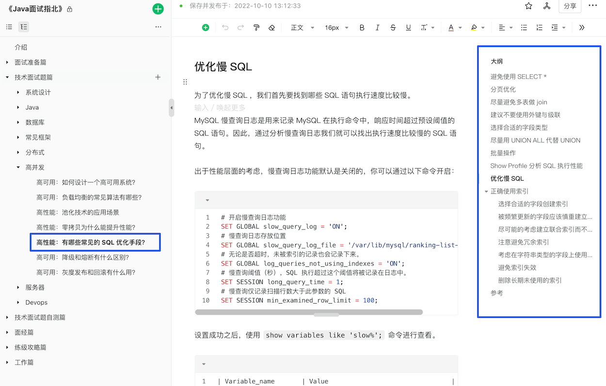
文章地址：https://www.yuque.com/snailclimb/mf2z3k/abc2sv （密码获取：）。
如何分析 SQL 的性能？
我们可以使用 EXPLAIN 命令来分析 SQL 的 执行计划 。执行计划是指一条 SQL 语句在经过 MySQL 查询优化器的优化会后，具体的执行方式。
EXPLAIN 并不会真的去执行相关的语句，而是通过 查询优化器 对语句进行分析，找出最优的查询方案，并显示对应的信息。
EXPLAIN 适用于 SELECT, DELETE, INSERT, REPLACE, 和 UPDATE语句，我们一般分析 SELECT 查询较多。
我们这里简单来演示一下 EXPLAIN 的使用。
EXPLAIN 的输出格式如下：
mysql> EXPLAIN SELECT `score`,`name` FROM `cus_order` ORDER BY `score` DESC;
+----+-------------+-----------+------------+------+---------------+------+---------+------+--------+----------+----------------+
| id | select_type | table | partitions | type | possible_keys | key | key_len | ref | rows | filtered | Extra |
+----+-------------+-----------+------------+------+---------------+------+---------+------+--------+----------+----------------+
| 1 | SIMPLE | cus_order | NULL | ALL | NULL | NULL | NULL | NULL | 997572 | 100.00 | Using filesort |
+----+-------------+-----------+------------+------+---------------+------+---------+------+--------+----------+----------------+
1 row in set, 1 warning (0.00 sec)
各个字段的含义如下：
| 列名 | 含义 |
|---|---|
| id | SELECT 查询的序列标识符 |
| select_type | SELECT 关键字对应的查询类型 |
| table | 用到的表名 |
| partitions | 匹配的分区，对于未分区的表，值为 NULL |
| type | 表的访问方法 |
| possible_keys | 可能用到的索引 |
| key | 实际用到的索引 |
| key_len | 所选索引的长度 |
| ref | 当使用索引等值查询时，与索引作比较的列或常量 |
| rows | 预计要读取的行数 |
| filtered | 按表条件过滤后，留存的记录数的百分比 |
| Extra | 附加信息 |
篇幅问题，我这里只是简单介绍了一下 MySQL 执行计划，详细介绍请看：SQL 的执行计划这篇文章。
读写分离和分库分表了解吗？
读写分离和分库分表相关的问题比较多，于是，我单独写了一篇文章来介绍：读写分离和分库分表详解。
深度分页如何优化？
数据冷热分离如何做？
MySQL 性能怎么优化？
MySQL 性能优化是一个系统性工程，涉及多个方面，在面试中不可能面面俱到。因此，建议按照“点-线-面”的思路展开，从核心问题入手，再逐步扩展，展示出你对问题的思考深度和解决能力。
1. 抓住核心：慢 SQL 定位与分析
性能优化的第一步永远是找到瓶颈。面试时，建议先从 慢 SQL 定位和分析 入手，这不仅能展示你解决问题的思路，还能体现你对数据库性能监控的熟练掌握：
- 监控工具： 介绍常用的慢 SQL 监控工具，如 MySQL 慢查询日志、Performance Schema 等，说明你对这些工具的熟悉程度以及如何通过它们定位问题。
- EXPLAIN 命令： 详细说明
EXPLAIN命令的使用，分析查询计划、索引使用情况，可以结合实际案例展示如何解读分析结果，比如执行顺序、索引使用情况、全表扫描等。
2. 由点及面：索引、表结构和 SQL 优化
定位到慢 SQL 后，接下来就要针对具体问题进行优化。 这里可以重点介绍索引、表结构和 SQL 编写规范等方面的优化技巧：
- 索引优化： 这是 MySQL 性能优化的重点，可以介绍索引的创建原则、覆盖索引、最左前缀匹配原则等。如果能结合你项目的实际应用来说明如何选择合适的索引，会更加分一些。
- 表结构优化： 优化表结构设计，包括选择合适的字段类型、避免冗余字段、合理使用范式和反范式设计等等。
- SQL 优化： 避免使用
SELECT *、尽量使用具体字段、使用连接查询代替子查询、合理使用分页查询、批量操作等，都是 SQL 编写过程中需要注意的细节。
3. 进阶方案：架构优化
当面试官对基础优化知识比较满意时，可能会深入探讨一些架构层面的优化方案。以下是一些常见的架构优化策略：
- 读写分离： 将读操作和写操作分离到不同的数据库实例，提升数据库的并发处理能力。
- 分库分表： 将数据分散到多个数据库实例或数据表中，降低单表数据量，提升查询效率。但要权衡其带来的复杂性和维护成本，谨慎使用。
- 数据冷热分离：根据数据的访问频率和业务重要性，将数据分为冷数据和热数据，冷数据一般存储在低成本、低性能的介质中，热数据存储在高性能存储介质中。
- 缓存机制： 使用 Redis 等缓存中间件，将热点数据缓存到内存中，减轻数据库压力。这个非常常用，提升效果非常明显，性价比极高！
4. 其他优化手段
除了慢 SQL 定位、索引优化和架构优化，还可以提及一些其他优化手段，展示你对 MySQL 性能调优的全面理解：
- 连接池配置： 配置合理的数据库连接池（如 连接池大小、超时时间 等），能够有效提升数据库连接的效率，避免频繁的连接开销。
- 硬件配置： 提升硬件性能也是优化的重要手段之一。使用高性能服务器、增加内存、使用 SSD 硬盘等硬件升级，都可以有效提升数据库的整体性能。
5.总结
在面试中，建议按优先级依次介绍慢 SQL 定位、索引优化、表结构设计和 SQL 优化等内容。架构层面的优化，如读写分离和分库分表、数据冷热分离 应作为最后的手段，除非在特定场景下有明显的性能瓶颈，否则不应轻易使用，因其引入的复杂性会带来额外的维护成本。
【MySQL 学习资料推荐】
MySQL 学习资料推荐
书籍推荐 。
文章推荐 :
- 一树一溪的 MySQL 系列教程
- Yes 的 MySQL 系列教程
- 写完这篇 我的 SQL 优化能力直接进入新层次 - 变成派大星 - 2022
- 两万字详解！InnoDB 锁专题！ - 捡田螺的小男孩 - 2022
- MySQL 的自增主键一定是连续的吗？ - 飞天小牛肉 - 2022
- 深入理解 MySQL 索引底层原理 - 腾讯技术工程 - 2020
参考
- 《高性能 MySQL》第 7 章 MySQL 高级特性
- 《MySQL 技术内幕 InnoDB 存储引擎》第 6 章 锁
- Relational Database：
- 一篇文章看懂 mysql 中 varchar 能存多少汉字、数字，以及 varchar(100)和 varchar(10)的区别：
- 技术分享 | 隔离级别：正确理解幻读：
- MySQL Server Logs - MySQL 5.7 Reference Manual：
- Redo Log - MySQL 5.7 Reference Manual：
- Locking Reads - MySQL 5.7 Reference Manual：
- 深入理解数据库行锁与表锁
- 详解 MySQL InnoDB 中意向锁的作用：
- 深入剖析 MySQL 自增锁：
- 在数据库中不可重复读和幻读到底应该怎么分？：